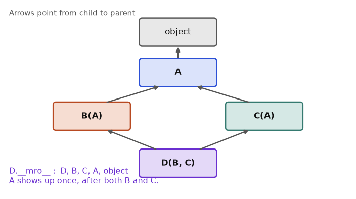

super(), MRO and Mixins@classmethod and @staticmethod__slots__Open any serious Python library and you will find classes: pandas has DataFrame, scikit-learn has LinearRegression, FastAPI has FastAPI, Locust has HttpUser. To read that code, and to write code that other engineers can extend without breaking it, you need object-oriented programming (OOP). OOP is a way of organising a program so that data and the functions that work on that data live together. By the end of this chapter you will write your own classes, make them behave like built-in types, choose between inheritance and composition, apply the SOLID rules, and recognise the nine design patterns that interviewers ask about. We use one running idea throughout: a small online shop (orders, money, users, discounts). All code was run with Python 3.14 and the outputs are real.
Words you need
| Word | Plain meaning |
|---|---|
| class | A template that describes what data and behaviour its objects have |
| instance / object | One real thing made from a class |
| attribute | A named piece of data stored on a class or object |
| method | A function defined inside a class |
self | The object the method is working on. Python passes it automatically |
__init__ | A method that runs right after an object is created, to set up its data |
How it works. class Name: defines a class. Calling Name(...) creates an instance and runs __init__. An instance attribute (self.count) belongs to one object. A class attribute (written directly in the class body) is shared by all objects. Why does self exist? A method must know which object it should change. If there were no self, hit() would not know whose counter to increase.
Real-world mapping
| Concept | Example value | Where it appears in the job |
|---|---|---|
| Class | LinearRegression | scikit-learn model template |
| Instance | model = LinearRegression() | One trained model |
| Instance attribute | model.coef_ | Weights learned from your data |
| Method | model.fit(X, y) | Changes the object's own data |
| Class attribute | HttpUser.wait_time | A setting shared by all virtual users |
Problem 8.1.1 Create a Counter class that counts hits per endpoint and counts how many counters exist.
Before you run it, predict: after a.total_created = 99, what will b.total_created print?
total_created in the class body (shared). Put name and count in __init__ (one set per object).a.total_created = 99 and compare.class Counter:
total_created = 0 # class attribute
def __init__(self, name):
self.name = name # instance attribute
self.count = 0
Counter.total_created += 1
def hit(self):
self.count += 1
return self.count
a = Counter("login")
b = Counter("search")
a.hit(); a.hit(); b.hit()
print(a.name, a.count, b.name, b.count)
print(Counter.total_created, a.total_created)
a.total_created = 99 # creates an instance attribute, shadows class one
print(a.total_created, b.total_created, Counter.total_created)
print(a.__dict__)
print(type(a), type(Counter))login 2 search 1
2 2
99 2 2
{'name': 'login', 'count': 2, 'total_created': 99}
<class '__main__.Counter'> <class 'type'>Line by line: a was hit twice and b once, so each keeps its own count. Two counters were created, so the shared value is 2. Writing a.total_created = 99 did not change the class value. It made a new instance attribute on a (you can see it inside a.__dict__), which hides the class one for a only.
b.total_created prints 2. Assignment through an object never edits the class attribute.Counter.total_created is still 2 in the output, and a.__dict__ contains the new key.Problem 8.1.2 Show the classic shared-list bug and its fix.
Predict: do x and y end up with one tag each?
class Bad:
tags = []
def add(self, t): self.tags.append(t)
x, y = Bad(), Bad()
x.add("a"); y.add("b")
print(x.tags, y.tags, x.tags is y.tags)
class Good:
def __init__(self): self.tags = []
def add(self, t): self.tags.append(t)
x, y = Good(), Good()
x.add("a"); y.add("b")
print(x.tags, y.tags)['a', 'b'] ['a', 'b'] True
['a'] ['b']Bad, one list lives on the class, so both objects add to the same list (is prints True). In Good, each object makes its own list in __init__.x.tags is y.tags is True in Bad and the two lists differ in Good.The typical beginner errors and their real messages
class A:
def hit(): return 1 # forgot self
A().hit()A.hit() takes 0 positional arguments but 1 was givenPython passed the object as the first argument, but you declared none. Fix: def hit(self):.
class B:
def __init__(self, n): self.n = n
B()B.__init__() missing 1 required positional argument: 'n'Fix: B(5), or give n a default.
The picture
Class Counter (template) Instances (real objects)
+--------------------+ a --> {name:'login', count:2}
| total_created = 2 | <-- shared b --> {name:'search', count:1}
| __init__, hit() | (each has its own __dict__)
+--------------------+Read it like this: the box on the left exists once. Each arrow on the right is one object holding its own dictionary of attributes. When Python looks up a.something, it checks a's own dictionary first, then the class.
Connection to the real job. Pipelines hold state in objects: a database connection, a model with learned weights, a configured API client. When results differ across runs, a shared mutable class attribute is a top suspect.
Applications
Report class that holds a DataFrame, a title and an export() method.fit and predict.nn.Module.PostgresConnection object that owns one open connection.def __init__(self, d={})), and expecting one copy per object. Mutable starting values go inside __init__. Class attributes should be constants.Check yourself
self refer to?Answer: The specific object the method was called on.
Answer: In __init__, as self.something.
obj.x = 5 and x was a class attribute, what changes?Answer: Only obj gets a new instance attribute. The class attribute is unchanged.
len(x) or a + b or print(obj), Python quietly calls a hidden method on your object. These methods have double underscores on each side, so people say "dunder" (double-underscore). A restaurant analogy: you just say "the usual", and the waiter knows what that means. Dunders are how your class defines what "the usual" means for +, len, print and for.Why they exist. Without them, your Money object could not be sorted, added or printed nicely. With them it behaves like a number. Python decides what an operator means by calling the method, not by hard-coded rules.
| You write | Python calls | Purpose |
|---|---|---|
repr(x), list display, debugger | __repr__ | Unambiguous text for developers |
print(x), str(x) | __str__ | Friendly text for users |
a == b | __eq__ | Equality |
hash(x), set member, dict key | __hash__ | Fixed number for fast lookup |
a < b | __lt__ | Ordering |
a + b | __add__ | Addition |
len(x) | __len__ | Size |
x[i] | __getitem__ | Indexing and slicing |
for v in x | __iter__ | Iteration |
v in x | __contains__ | Membership |
x(...) | __call__ | Make an object callable like a function |
with x: | __enter__, __exit__ | Context manager |
if x: | __bool__ | Truthiness |
Two rules to remember. First, if __str__ is missing, Python uses __repr__. So always write __repr__. Second, if you define __eq__ and not __hash__, Python makes your object unhashable (it cannot go in a set or be a dict key). Objects that are equal must have equal hashes.
Problem 8.2.1 Build a Money class that stores paise (1 rupee = 100 paise) as an integer to avoid float errors, with printing, comparison, addition and hashing.
Predict: what does sorted([Money(10,50), Money(3,75), Money(1)]) print?
self.paise = rupees*100 + paise. Integers are exact; 0.1 + 0.2 floats are not.__repr__, __str__, __eq__, __lt__, __hash__, __add__, __bool__.@total_ordering from functools: given __eq__ and __lt__, it fills in >, >=, <=.from functools import total_ordering
@total_ordering
class Money:
def __init__(self, rupees, paise=0):
self.paise = rupees*100 + paise
def __repr__(self): return f"Money({self.paise//100}, {self.paise%100})"
def __str__(self): return f"Rs {self.paise/100:.2f}"
def __eq__(self, o): return isinstance(o, Money) and self.paise == o.paise
def __lt__(self, o): return self.paise < o.paise
def __hash__(self): return hash(self.paise)
def __add__(self, o): return Money(0, self.paise + o.paise)
def __bool__(self): return self.paise != 0
m1, m2 = Money(10, 50), Money(3, 75)
print(repr(m1), str(m1), m1 + m2)
print(m1 > m2, m1 == Money(10,50), m1 >= m2)
print(sorted([m1, m2, Money(1)]))
print({m1, Money(10,50)})
print(bool(Money(0)))
print([m1, m2])Money(10, 50) Rs 10.50 Rs 14.25
True True True
[Money(1, 0), Money(3, 75), Money(10, 50)]
{Money(10, 50)}
False
[Money(10, 50), Money(3, 75)]Line by line: repr gives the developer view, str gives the user view, and print(m1 + m2) uses __str__, so we see Rs 14.25 (1050 + 375 = 1425 paise). Sorting works because __lt__ exists. The set keeps one item because two equal Money(10,50) have the same hash. Money(0) is falsy because of __bool__. A list shows items using __repr__.
[Money(1, 0), Money(3, 75), Money(10, 50)], ordered 100, 375, 1050 paise.Problem 8.2.2 Make a container that behaves like a sequence, and an object that behaves like a function.
class Playlist:
def __init__(self, *songs): self._s = list(songs)
def __len__(self): return len(self._s)
def __getitem__(self, i): return self._s[i]
def __iter__(self): return iter(self._s)
def __contains__(self, x): return x in self._s
p = Playlist("a","b","c")
print(len(p), p[0], p[-1], p[0:2], "b" in p, list(p))
class Timer:
def __init__(self, f): self.f = f; self.calls = 0
def __call__(self, *a):
self.calls += 1
return self.f(*a)
sq = Timer(lambda x: x*x)
print(sq(4), sq(5), sq.calls)3 a c ['a', 'b'] True ['a', 'b', 'c']
16 25 2len, indexing, slicing, in and list() all work on Playlist because we defined four dunders. sq is called like a function but remembers state: it was called twice.4*4 = 16, 5*5 = 25, two calls. The slice p[0:2] passes a slice object to __getitem__, which the inner list handles.Typical wrong version
class P:
def __init__(self, x): self.x = x
def __eq__(self, o): return self.x == o.x
{P(1)}cannot use 'P' as a set element (unhashable type: 'P')Defining __eq__ removed the default hash. Fix: add def __hash__(self): return hash(self.x). Also note that a class with no __eq__ compares by identity, so Q(1) == Q(1) is False for a plain class.
Connection to the real job. pandas, NumPy and PyTorch are full of dunders (df[col] is __getitem__, a + b on arrays is __add__). __enter__/__exit__ power with open(...) and database transactions (full treatment in Chapter 7).
Applications
Money or Percent that sort and add correctly.Dataset classes with __len__ and __getitem__ (the exact contract PyTorch Dataset expects).__eq__ without __hash__, or writing __str__ and skipping __repr__. Always write __repr__ first. It is what you see in logs and the debugger.Check yourself
print(obj) call first?Answer: __str__. If missing, it falls back to __repr__.
__eq__ not go in a set?Answer: Defining __eq__ sets __hash__ to None, so it is unhashable.
obj(5) legal?Answer: __call__.
super(), MRO and MixinsHow it works. class Dog(Animal): means Dog is-an Animal. super() gives access to the parent's version of a method. MRO (Method Resolution Order) is the list Python searches, in order, to find a method. For multiple inheritance Python uses the C3 rule: children before parents, and the order you wrote the parents in is respected.
Problem 8.3.1 Single inheritance with an override.
class Animal:
def __init__(self, name): self.name = name
def speak(self): return "..."
def intro(self): return f"{self.name} says {self.speak()}"
class Dog(Animal):
def __init__(self, name, breed):
super().__init__(name)
self.breed = breed
def speak(self): return "Woof"
d = Dog("Rex", "Lab")
print(d.intro(), isinstance(d, Animal), issubclass(Dog, Animal))Rex says Woof True Trueintro is inherited from Animal, but it calls self.speak(), which finds Dog.speak. So Python picks the most specific version. This is called polymorphism: same call, different behaviour per class.isinstance(d, Animal) is True, since a Dog is an Animal.fit, run, handle) without knowing your class.Problem 8.3.2 The diamond: what order does super() follow?
Predict the output for D().who() where D(B, C) and both B and C extend A.
class A:
def who(self): return "A"
class B(A):
def who(self): return "B>" + super().who()
class C(A):
def who(self): return "C>" + super().who()
class D(B, C):
def who(self): return "D>" + super().who()
print(D().who())
print([k.__name__ for k in D.__mro__])D>B>C>A
['D', 'B', 'C', 'A', 'object']super() does not mean "my parent". It means "the next class in the MRO". So B's super() goes to C, not straight to A. A is called once, last.D>B>C>A equals the MRO list.ClassName.__mro__ to see the order.Mixins. A mixin is a small class that adds one ability and is not meant to stand alone.
class JsonMixin:
def to_json(self):
import json
return json.dumps(self.__dict__)
class LogMixin:
def log(self, msg): print(f"[{type(self).__name__}] {msg}")
class User(JsonMixin, LogMixin):
def __init__(self, n, a): self.name=n; self.age=a
u = User("Asha", 30)
u.log(u.to_json())
try:
class X(A, B): pass
except TypeError as e: print("TypeError:", e)[User] {"name": "Asha", "age": 30}
TypeError: Cannot create a consistent method resolution order (MRO) for bases A, BThe second case fails because A is a parent of B, yet we asked for A before B. Python cannot satisfy "children before parents" and says so.
The picture
A
/ \
B C MRO of D: D -> B -> C -> A -> object
\ /
D super() in B calls the next one in this list (C)Connection to the real job. Django, scikit-learn (BaseEstimator, TransformerMixin) and PyTorch rely on inheritance and mixins. You will subclass them and override one or two methods.
Applications
BaseEstimator and TransformerMixin.BaseOperator.HttpUser subclasses to define tasks.Car is not an Engine. Use composition (section 8.7).Check yourself
super() return?Answer: A proxy that looks up the method in the next class in the MRO.
Answer: ClassName.__mro__ or ClassName.mro().
Answer: A small class that adds one ability to other classes through inheritance.
How it works. With abc.ABC and @abstractmethod, you cannot create an object until every abstract method is implemented. This catches mistakes at the moment of creation, not halfway through a pipeline.
Problem 8.4.1 Define an Exporter interface and see it refuse to be incomplete.
from abc import ABC, abstractmethod
class Exporter(ABC):
@abstractmethod
def export(self, rows): ...
def run(self, rows):
return f"{len(rows)} rows -> {self.export(rows)}"
class CsvExporter(Exporter):
def export(self, rows): return "\n".join(",".join(map(str,r)) for r in rows)
try:
Exporter()
except TypeError as e: print("TypeError:", e)
class Half(Exporter): pass
try: Half()
except TypeError as e: print("TypeError:", e)
print(CsvExporter().run([(1,2),(3,4)]))TypeError: Can't instantiate abstract class Exporter without an implementation for abstract method 'export'
TypeError: Can't instantiate abstract class Half without an implementation for abstract method 'export'
2 rows -> 1,2
3,4CsvExporter works, and it reuses run from the base class (this is the "template method" idea).Problem 8.4.2 A Protocol needs no inheritance.
from typing import Protocol, runtime_checkable
class Closeable(Protocol):
def close(self) -> None: ...
class FileLike:
def close(self): print("closed file-like")
def shutdown(x: Closeable): x.close()
shutdown(FileLike()) # no inheritance needed
@runtime_checkable
class Sized2(Protocol):
def __len__(self) -> int: ...
print(isinstance([1], Sized2), isinstance(5, Sized2))closed file-like
True FalseFileLike never mentions Closeable, yet it fits because it has close(). A type checker such as mypy (Chapter 9) verifies the fit. With @runtime_checkable, isinstance can check that the methods exist: a list has __len__, an int does not.isinstance(5, Sized2) is False, as int has no __len__.| Tool | Enforced when | Needs inheritance | Use when |
|---|---|---|---|
| ABC | At object creation | Yes | You own all the classes and want shared code |
| Protocol | By type checker (mypy) | No | You accept third-party objects |
Connection to the real job. Storage backends (local disk, S3), model loaders and readers all share an interface so the pipeline code never changes.
Applications
Source and Sink interfaces for connectors.ModelStore interface with local and cloud versions.Metric protocol: anything with __call__(y_true, y_pred).Protocol is checked by tools, not by Python at runtime. Without mypy, a wrong object fails only when the missing method is called.Check yourself
Answer: TypeError: Can't instantiate abstract class ....
Answer: No. Having the right methods is enough.
Answer: When you want to accept objects you do not control.
@classmethod and @staticmethodt.celsius = 30) while a hidden function validates or computes the value. You can start with a plain attribute and add checks later without changing any calling code.Three kinds of method
| Decorator | First argument | Use |
|---|---|---|
| none | self (the object) | Normal behaviour |
@classmethod | cls (the class) | Alternative constructors like from_url |
@staticmethod | nothing | A helper that lives in the class for tidiness |
@property | self | Looks like an attribute, runs code |
Problem 8.5.1 A temperature with validation and a computed attribute.
class Temperature:
def __init__(self, c): self.celsius = c
@property
def celsius(self): return self._c
@celsius.setter
def celsius(self, v):
if v < -273.15: raise ValueError("below absolute zero")
self._c = v
@property
def fahrenheit(self): return self._c*9/5+32
t = Temperature(100)
print(t.celsius, t.fahrenheit)
t.celsius = 0
print(t.fahrenheit)
try: t.celsius = -300
except ValueError as e: print("ValueError:", e)
try: t.fahrenheit = 5
except AttributeError as e: print("AttributeError:", e)100 212.0
32.0
ValueError: below absolute zero
AttributeError: property 'fahrenheit' of 'Temperature' object has no setter100 C = 100*9/5 + 32 = 212 F and 0 C = 32 F. Setting an impossible temperature is rejected, and the read-only fahrenheit cannot be assigned.Note that __init__ assigns self.celsius, so even the first value goes through the setter and is checked.
Problem 8.5.2 An alternative constructor and a helper.
class Server:
def __init__(self, host, port): self.host, self.port = host, port
@classmethod
def from_url(cls, url):
host, port = url.split(":")
return cls(host, int(port))
@staticmethod
def valid_port(p): return 0 < p < 65536
def __repr__(self): return f"Server({self.host!r}, {self.port})"
print(Server.from_url("db.local:5432"), Server.valid_port(70000))Server('db.local', 5432) Falsefrom_url builds a Server from text; it uses cls, so subclasses get their own type. 70000 is above the maximum port 65535, so the helper returns False.0 < 70000 < 65536 is false.pd.DataFrame.from_dict and datetime.fromisoformat are classmethods of the same kind.Connection to the real job. Config classes use from_env() or from_yaml() classmethods. Properties compute derived columns (for example cost_per_request) without storing them twice.
Applications
Config.from_env() for pipeline settings.n_features_.self.celsius inside the celsius setter. It calls itself forever (RecursionError). Store into a different name, like self._c.Check yourself
cls mean in a classmethod?Answer: The class itself, not an object.
Answer: A property with no setter.
from_url?Answer: It is an alternative way to build the object and works with subclasses.
__slots____init__, __repr__ and __eq__ for every small data holder is boring. A dataclass writes them for you from a list of fields. A NamedTuple is an immutable record with names. An Enum is a fixed menu of allowed choices.Problem 8.6.1 A dataclass with default list, validation and copy.
from dataclasses import dataclass, field, asdict, replace
@dataclass
class Request:
url: str
latency_ms: float = 0.0
tags: list = field(default_factory=list)
def __post_init__(self):
if self.latency_ms < 0: raise ValueError("negative latency")
r = Request("/login", 120.5)
print(r, r == Request("/login", 120.5))
print(asdict(r), replace(r, latency_ms=99))
try: Request("/x", -1)
except ValueError as e: print("ValueError:", e)Request(url='/login', latency_ms=120.5, tags=[]) True
{'url': '/login', 'latency_ms': 120.5, 'tags': []} Request(url='/login', latency_ms=99, tags=[])
ValueError: negative latency__init__, __repr__ and __eq__ for free. field(default_factory=list) gives each object its own list (the fix for the bug in 8.1). __post_init__ runs after the generated __init__, so it is the place for validation.dataclass is the standard way to model records and configs in modern Python.Problem 8.6.2 Frozen dataclass, NamedTuple and Enum.
from dataclasses import dataclass
from typing import NamedTuple
from enum import Enum, auto
@dataclass(frozen=True, order=True)
class Point:
x: int
y: int
p = Point(1,2)
try: p.x = 5
except Exception as e: print(type(e).__name__, e)
print(sorted([Point(2,1), Point(1,9)]), {p: "ok"})
class Pt(NamedTuple):
x: int
y: int
q = Pt(3,4)
x, y = q
print(q, q.x, q[1], x+y, q._asdict())
class Status(Enum):
OK = 200
NOT_FOUND = 404
ERR = auto()
print(Status.OK, Status(404), Status["ERR"].value, Status.OK.name)
print([s.name for s in Status])FrozenInstanceError cannot assign to field 'x'
[Point(x=1, y=9), Point(x=2, y=1)] {Point(x=1, y=2): 'ok'}
Pt(x=3, y=4) 3 4 7 {'x': 3, 'y': 4}
Status.OK Status.NOT_FOUND 405 OK
['OK', 'NOT_FOUND', 'ERR']order=True sorts by fields in order. A NamedTuple unpacks like a tuple and also has names. auto() gave ERR the value 405, because it continues counting from the last number (404).3 + 4 = 7. Status(404) looks up by value, Status["ERR"] by name."paid" that cause silent typos.| Choose | When |
|---|---|
dataclass | Mutable record with methods or defaults |
dataclass(frozen=True) | Immutable record, dict key |
NamedTuple | Light immutable record, behaves like a tuple |
Enum | Fixed set of named choices |
__slots__ and memory. Normally each object carries a dictionary of its attributes. __slots__ says "these are the only attributes", and Python stores them in a compact fixed layout.
import sys
class Plain:
def __init__(self,a,b): self.a=a; self.b=b
class Slim:
__slots__ = ("a","b")
def __init__(self,a,b): self.a=a; self.b=b
pl, sl = Plain(1,2), Slim(1,2)
print(sys.getsizeof(pl), sys.getsizeof(pl.__dict__), sys.getsizeof(sl))
try: sl.c = 3
except AttributeError as e: print("AttributeError:", e)48 296 48
AttributeError: 'Slim' object has no attribute 'c' and no __dict__ for setting new attributessys.getsizeof measures only the object itself in bytes (not things it points to). Here Plain is 48 bytes plus a 296-byte dictionary, while Slim is 48 bytes in total. In a test I made 100,000 objects of each and measured with tracemalloc: about 12 MB for Plain versus 8 MB for Slim (numbers vary by machine and Python version). The saving matters when you hold millions of small objects.
Connection to the real job. Config, API responses, events and rows are modelled as dataclasses. Pydantic (Chapter 9) builds on the same idea, adding validation.
Applications
TrainingConfig dataclass holding learning rate, epochs.Enum for order status, HTTP method.list as a dataclass default: tags: list = []. Python raises ValueError: mutable default <class 'list'> for field tags is not allowed: use default_factory. Use field(default_factory=list).Check yourself
Answer: @dataclass(frozen=True).
__post_init__ do?Answer: Runs right after the generated __init__, for validation.
__slots__ save?Answer: The per-object attribute dictionary, so less memory.
The four pillars of OOP
| Pillar | Meaning | Example in this chapter |
|---|---|---|
| Encapsulation | Hide internal data; expose a clean surface | _c hidden behind property celsius |
| Abstraction | Show what, hide how | Exporter.export |
| Inheritance | Reuse and specialise a parent | Dog(Animal) |
| Polymorphism | One call, many behaviours | speak() |
Problem 8.7.1 Composition makes swapping (and testing) easy.
class Engine:
def start(self): return "engine on"
class Car:
def __init__(self, engine): self.engine = engine
def start(self): return "car: " + self.engine.start()
class FakeEngine:
def start(self): return "fake"
print(Car(Engine()).start(), "|", Car(FakeEngine()).start())car: engine on | car: fakeCar works with any object that has start(). In tests we pass a fake. This idea (give an object its parts from outside) is called dependency injection.car: and differ only in the engine.SOLID is a set of five design rules. Each is easy to state; the examples show them in code.
| Letter | Rule | Plain meaning | Broken sign |
|---|---|---|---|
| S | Single responsibility | A class has one reason to change | A class that parses, calculates and emails |
| O | Open/closed | Add features by adding code, not editing old code | A long if/elif on type names |
| L | Liskov substitution | A child can replace its parent without surprises | Child raises errors parent never did |
| I | Interface segregation | Small interfaces, not one huge one | Classes forced to implement unused methods |
| D | Dependency inversion | Depend on abstractions, not concrete classes | Service creates MySQL() inside itself |
Problem 8.7.2 Spot a Liskov violation.
class Bird:
def fly(self): return "flying"
class Penguin(Bird):
def fly(self): raise NotImplementedError("penguins cannot fly")
def migrate(birds): return [b.fly() for b in birds]
try: migrate([Bird(), Penguin()])
except NotImplementedError as e: print("LSP broken:", e)LSP broken: penguins cannot flymigrate expects every Bird to fly. Penguin breaks that promise, so it cannot safely replace Bird. Fix: split the hierarchy (Bird and FlyingBird).Bird.The open/closed and dependency-inversion examples appear in the next section as Strategy and Dependency Injection.
Connection to the real job. In design interviews, "how would you make this extensible and testable?" is answered with these five letters.
Applications
predict interface.Check yourself
Car an Engine or does it have one?Answer: It has one: use composition.
Answer: Whether a subclass can replace its parent without breaking callers.
Answer: Passing an object's parts in from outside instead of building them inside.
All code below ran together; outputs are in the blocks.
Strategy (swap an algorithm) and Singleton (one shared instance):
from typing import Callable
def no_discount(t): return t
def festival(t): return t*0.9
def bulk(t): return t*0.8 if t > 1000 else t
STRATEGIES: dict[str, Callable[[float], float]] = {"none": no_discount, "festival": festival, "bulk": bulk}
def price(total, rule): return STRATEGIES[rule](total)
print(price(1500, "festival"), price(1500, "bulk"), price(500, "bulk"))
class Config:
_inst = None
def __new__(cls):
if cls._inst is None:
cls._inst = super().__new__(cls)
cls._inst.values = {}
return cls._inst
c1, c2 = Config(), Config()
c1.values["env"] = "prod"
print(c1 is c2, c2.values)
import logging
print(logging.getLogger("a") is logging.getLogger("a"))1350.0 1200.0 500
True {'env': 'prod'}
True1500*0.9 = 1350, 1500*0.8 = 1200, and 500 is below the bulk limit so it stays 500.Config() always returns the same object, so changes made through c1 are visible through c2. logging.getLogger("a") is Python's own example. Use sparingly: global state makes tests hard.Factory (build the right object from a name):
from abc import ABC, abstractmethod
class Reader(ABC):
@abstractmethod
def read(self, text): ...
class CsvReader(Reader):
def read(self, text): return [l.split(",") for l in text.splitlines()]
class PipeReader(Reader):
def read(self, text): return [l.split("|") for l in text.splitlines()]
def make_reader(kind):
readers = {"csv": CsvReader, "pipe": PipeReader}
try: return readers[kind]()
except KeyError: raise ValueError(f"unknown reader {kind!r}") from None
print(make_reader("pipe").read("a|b\nc|d"))
try: make_reader("xml")
except ValueError as e: print("ValueError:", e)[['a', 'b'], ['c', 'd']]
ValueError: unknown reader 'xml'The caller says what it wants ("pipe") and the factory decides which class to create.
Builder (assemble a complex object step by step):
class QueryBuilder:
def __init__(self, table): self.table=table; self._where=[]; self._limit=None; self._params=[]
def where(self, cond, *params): self._where.append(cond); self._params += params; return self
def limit(self, n): self._limit = n; return self
def build(self):
sql = f"SELECT * FROM {self.table}"
if self._where: sql += " WHERE " + " AND ".join(self._where)
if self._limit is not None: sql += f" LIMIT {int(self._limit)}"
return sql, tuple(self._params)
print(QueryBuilder("orders").where("status = ?", "paid").where("amount > ?", 500).limit(10).build())('SELECT * FROM orders WHERE status = ? AND amount > ? LIMIT 10', ('paid', 500))Each method returns self, so calls chain. Notice that user values travel as separate parameters (the ?), never pasted into the SQL text. This protects against SQL injection (Chapter 13). Table names cannot be parameters, so they must come from trusted code only.
Observer (publish and subscribe), Decorator (wrap an object to add behaviour) and Adapter (make an old interface fit a new one):
class EventBus:
def __init__(self): self._subs = {}
def subscribe(self, event, fn): self._subs.setdefault(event, []).append(fn)
def publish(self, event, data):
for fn in self._subs.get(event, []): fn(data)
bus = EventBus()
bus.subscribe("order", lambda d: print("email sent for", d))
bus.subscribe("order", lambda d: print("stock reduced by", d["qty"]))
bus.publish("order", {"id": 7, "qty": 2})
class Notifier:
def send(self, m): return m
class Upper:
def __init__(self, inner): self.inner = inner
def send(self, m): return self.inner.send(m.upper())
class Stars:
def __init__(self, inner): self.inner = inner
def send(self, m): return "*** " + self.inner.send(m)
print(Stars(Upper(Notifier())).send("alert"))
class OldLogger:
def write_line(self, s): print("OLD:", s)
class LoggerAdapter:
def __init__(self, old): self.old = old
def info(self, msg): self.old.write_line(f"INFO {msg}")
LoggerAdapter(OldLogger()).info("started")email sent for {'id': 7, 'qty': 2}
stock reduced by 2
*** ALERT
OLD: INFO startedpublish.Stars wraps Upper wraps Notifier, so "alert" becomes "ALERT" and then gets stars. (Not the same as Python's @decorator syntax in Chapter 7, but the same wrapping spirit.)OldLogger has write_line; our code wants info. The adapter translates.Repository (hide the database behind an interface) with Dependency Injection:
import sqlite3
from dataclasses import dataclass
from typing import Protocol
@dataclass
class User:
id: int
name: str
class UserRepo(Protocol):
def add(self, name: str) -> User: ...
def get(self, id: int) -> User | None: ...
class SqliteUserRepo:
def __init__(self, conn):
self.conn = conn
conn.execute("CREATE TABLE IF NOT EXISTS users(id INTEGER PRIMARY KEY, name TEXT)")
def add(self, name):
cur = self.conn.execute("INSERT INTO users(name) VALUES (?)", (name,))
return User(cur.lastrowid, name)
def get(self, id):
row = self.conn.execute("SELECT id, name FROM users WHERE id = ?", (id,)).fetchone()
return User(*row) if row else None
class InMemoryUserRepo:
def __init__(self): self.d = {}
def add(self, name):
u = User(len(self.d)+1, name); self.d[u.id] = u; return u
def get(self, id): return self.d.get(id)
class SignupService:
def __init__(self, repo: UserRepo):
self.repo = repo
def signup(self, name):
if not name.strip(): raise ValueError("empty name")
return self.repo.add(name.strip())
for repo in (InMemoryUserRepo(), SqliteUserRepo(sqlite3.connect(":memory:"))):
svc = SignupService(repo)
u = svc.signup(" Meera ")
print(type(repo).__name__, u, repo.get(u.id), repo.get(99))InMemoryUserRepo User(id=1, name='Meera') User(id=1, name='Meera') None
SqliteUserRepo User(id=1, name='Meera') User(id=1, name='Meera') NoneSignupService holds the business rule (strip the name, reject empty). It never mentions SQL. We inject the repository from outside, so tests use the in-memory one and production uses SQLite (or Postgres). Both give identical results here.
Pattern map
| Pattern | Problem it solves | Python shortcut |
|---|---|---|
| Singleton | One shared instance | A module-level object |
| Factory | Create right class by name | Dict of classes |
| Builder | Many optional steps | Method chaining, or dataclass defaults |
| Strategy | Swap algorithm | Pass a function |
| Observer | Notify many listeners | List of callbacks |
| Decorator | Add behaviour by wrapping | Wrapper class or @decorator |
| Adapter | Make interfaces fit | Small wrapper class |
| Repository | Hide data storage | Class with add/get |
| Dependency Injection | Supply parts from outside | Constructor argument |
Connection to the real job. Airflow, scikit-learn pipelines, LangChain callbacks and FastAPI dependencies are these patterns. In system design interviews, Repository plus DI is the standard answer to "how do you keep the database out of business logic".
Applications
Depends).Check yourself
Answer: Strategy.
SignupService not call sqlite3 directly?Answer: So the storage can be swapped and tested separately (Repository plus DI).
Answer: Translates one interface into the one your code expects.
Every feature in this chapter, from @property to super(), is built on a small set of rules in Python's data model. Learning those rules lets you build validation, plugin systems and caches that feel native.
A descriptor is an object stored on a class that defines __get__, and optionally __set__. When you read or assign obj.attr and attr is a descriptor on the class, Python calls those methods instead of touching the instance dictionary. property, methods and classmethod are all descriptors. Writing your own lets you reuse one validation rule on many fields, which a property cannot do without copy and paste.
Problem 8.9.1 Write a reusable Positive descriptor and use it for both price and qty of an Item.
| Step 1 | __set_name__(owner, name) is called once when the class is built; store a private name such as _price. |
|---|---|
| Step 2 | __set__ checks the value and stores it in the instance dict under the private name. |
| Step 3 | __get__ reads it back. When obj is None the access came from the class, so return the descriptor itself. |
| Check | Item(2.5, 4) works and total is 10.0. Item(-1, 3) raises ValueError. |
class Positive:
def __set_name__(self, owner, name):
self.name = "_" + name
def __get__(self, obj, objtype=None):
if obj is None:
return self
return getattr(obj, self.name)
def __set__(self, obj, value):
if value <= 0:
raise ValueError(f"{self.name[1:]} must be positive, got {value}")
setattr(obj, self.name, value)
class Item:
price = Positive()
qty = Positive()
def __init__(self, price, qty):
self.price = price
self.qty = qty
it = Item(2.5, 4)
print(it.price * it.qty, it.__dict__)
try:
Item(-1, 3)
except ValueError as e:
print(e)
print(type(Item.price).__name__)10.0 {'_price': 2.5, '_qty': 4}
price must be positive, got -1
Positiveself.value = value). A descriptor lives on the class, so every instance would share one value. Wrong: two items overwrite each other's price. Right: store per-instance data in the instance, as the code above does with setattr(obj, self.name, value).__init_subclass__ is a class method that Python calls on the parent every time someone subclasses it. It is the simple way to build a plugin registry, with no metaclass needed. Extra keyword arguments in the class line are passed to it.
Problem 8.9.2 Build an Exporter base class that registers each subclass under a format name given in the class line.
| Step 1 | Define __init_subclass__(cls, fmt=None, **kw) on the base. |
|---|---|
| Step 2 | Call super().__init_subclass__(**kw) so cooperating parents still work. |
| Step 3 | If fmt is given, store cls in a registry dict. |
| Check | The registry lists both formats and registry["json"]() builds the right object. |
class Exporter:
registry = {}
def __init_subclass__(cls, fmt=None, **kw):
super().__init_subclass__(**kw)
if fmt:
Exporter.registry[fmt] = cls
class CsvExporter(Exporter, fmt="csv"):
def run(self): return "a,b"
class JsonExporter(Exporter, fmt="json"):
def run(self): return '{"a": 1}'
print(sorted(Exporter.registry))
print(Exporter.registry["json"]().run())['csv', 'json']
{"a": 1}Sets and dict keys rely on a contract: objects that are equal must have equal hashes. If you define __eq__ and nothing else, Python sets __hash__ to None and your class becomes unhashable. If you define both, hash only fields that do not change.
class Bad:
def __init__(self, k): self.k = k
def __eq__(self, o): return self.k == o.k
try:
{Bad(1)}
except TypeError as e:
print(e)
class Good:
def __init__(self, k): self.k = k
def __eq__(self, o): return isinstance(o, Good) and self.k == o.k
def __hash__(self): return hash(self.k)
print(len({Good(1), Good(1), Good(2)}))
class Mutable:
def __init__(self, k): self.k = k
def __eq__(self, o): return self.k == o.k
def __hash__(self): return hash(self.k)
m = Mutable(1); s = {m}
m.k = 2
print(m in s, Mutable(1) in s, len(s))cannot use 'Bad' as a set element (unhashable type: 'Bad')
2
False False 1The last line is the dangerous case: after m.k = 2, the object sits in the set in the slot for hash 1, so neither m (hash now 2) nor Mutable(1) (whose hash matches, but it no longer equals the stored object) is found. The set is silently broken.
__hash__ uses self.k and you later change k, so membership tests fail. Right: hash only immutable fields, or make the class frozen (@dataclass(frozen=True)) so it cannot change.functools.cached_property runs the method on first access and stores the result in the instance dict, so later reads are plain attribute lookups. It is a non-data descriptor, which is why the stored value wins afterwards. Delete the attribute to force recomputation.
from functools import cached_property
class Report:
def __init__(self, rows): self.rows = rows
@cached_property
def total(self):
print("computing")
return sum(self.rows)
r = Report([1, 2, 3])
print(r.total, r.total)
del r.total
r.rows.append(4)
print(r.total)computing
6 6
computing
10Notice the stale-value risk: after rows.append(4) the cached total would still say 6 until it was deleted. Cache only values that cannot change, or invalidate on purpose.
Three tools solve most real problems. field(default_factory=list) gives each instance its own list, and Python refuses a plain [] default. __post_init__ validates after the generated __init__. frozen=True blocks assignment and slots=True removes the per-instance dict (Python 3.10 and later). Inside a frozen class use object.__setattr__ to set a derived field in __post_init__.
Problem 8.9.3 Make an immutable Order with a list of items, an id that must be positive, and a derived total equal to the number of items.
| Step 1 | items uses default_factory=list. |
|---|---|
| Step 2 | total uses init=False, so callers cannot pass it. |
| Step 3 | __post_init__ checks the id and sets total with object.__setattr__. |
| Check | Assigning o.id raises FrozenInstanceError; replace makes a modified copy; no __dict__ exists. |
from dataclasses import dataclass, field, replace, fields
import sys
@dataclass(frozen=True, slots=True)
class Order:
id: int
items: list = field(default_factory=list)
total: float = field(init=False, default=0.0)
def __post_init__(self):
if self.id <= 0:
raise ValueError("id must be positive")
object.__setattr__(self, "total", float(len(self.items)))
o = Order(1, ["a", "b"])
print(o)
try:
o.id = 5
except Exception as e:
print(type(e).__name__)
print(replace(o, id=2).id, hasattr(o, "__dict__"))
@dataclass
class Plain:
id: int
try:
@dataclass
class Oops:
xs: list = []
except ValueError as e:
print(e)
print([f.name for f in fields(Order)])Order(id=1, items=['a', 'b'], total=2.0)
FrozenInstanceError
2 False
mutable default <class 'list'> for field xs is not allowed: use default_factory
['id', 'items', 'total']property (data descriptor) beats an instance value, while cached_property (non-data) is overridden by the value it stores.__init_subclass__, a class decorator or a descriptor cannot do the job; those three cover almost every real need.__getattr__ runs only when normal lookup fails. __getattribute__ runs on every access and is easy to turn into infinite recursion, so avoid it unless you must.super() follows the MRO (section 8.3), not "the parent". The figure below shows a diamond, and the code after it proves each class runs once.
class A:
def hi(self): return "A"
class B(A):
def hi(self): return "B>" + super().hi()
class C(A):
def hi(self): return "C>" + super().hi()
class D(B, C):
def hi(self): return "D>" + super().hi()
print(D().hi())
print([k.__name__ for k in D.__mro__])D>B>C>A
['D', 'B', 'C', 'A', 'object']Problem 8.P.11 (what is the output?) What do the two lines print for the diamond above, where each hi calls super().hi()?
Answer: D>B>C>A and ['D', 'B', 'C', 'A', 'object']. Note that B's super() goes to C, not to A, because super() follows the MRO of the instance's class.
Problem 8.P.12 (find the bug) A class defines __eq__ comparing k and you put an instance in a set. What error appears and what is the minimal fix?
Answer: TypeError: cannot use 'Bad' as a set element (unhashable type: 'Bad'). Add def __hash__(self): return hash(self.k) and make k unchangeable (or freeze the class). With that, {Good(1), Good(1), Good(2)} has 2 elements.
Problem 8.P.13 (build) Write a Range descriptor that takes low and high in its constructor and rejects values outside them. Use it for age = Range(0, 130).
Answer: Copy Positive from 8.9.1, add def __init__(self, low, high) storing both, and in __set__ raise ValueError when not self.low <= value <= self.high. Self-check: does a second instance keep its own age (stored in the instance, not on the descriptor)?
Problem 8.P.14 (stretch) Why does @dataclass class Oops: xs: list = [] fail, and what is the sibling bug with function defaults?
Answer: Python raises ValueError: mutable default <class 'list'> for field xs is not allowed: use default_factory, because all instances would share one list. The function-default twin is def f(x=[]) from Chapter 2. Fix with field(default_factory=list).
Problem 8.P.15 (interview) When would you choose __init_subclass__ over a metaclass?
Answer: Almost always. It runs on subclass creation, needs no extra concept, composes with other bases, and covers registries and validation. Choose a metaclass only to control how the class object itself is created or its namespace, which is rare.
self is that object.__init__. Never share mutable data through class attributes or default arguments.print, len, +, <, for, with and ().__eq__, also define __hash__ or the object is unhashable.super() follows the MRO, not "the parent". Check Class.__mro__.dataclass for records, NamedTuple for light immutable records, Enum for fixed choices, __slots__ for memory.| Pattern | Syntax |
|---|---|
| Record | @dataclass(frozen=True, order=True) |
| Safe list default | field(default_factory=list) |
| Read-only attribute | @property without setter |
| Other constructor | @classmethod def from_x(cls, ...) |
| Interface | class X(ABC) + @abstractmethod |
| See MRO | Class.__mro__ |
| Object size | sys.getsizeof(obj) |
Problem 8.9.1 (easy) What prints?
class C:
n = 0
c1, c2 = C(), C()
c1.n = 5
print(c2.n)Answer: 0. The assignment created an instance attribute on c1 only.
Problem 8.9.2 (easy) Find the bug: class A: with def hit(): return 1, called as A().hit().
Answer: The method is missing self. Python raises A.hit() takes 0 positional arguments but 1 was given. Fix: def hit(self):.
Problem 8.9.3 (easy) For class Q: with only __init__(self, x) storing x, what does Q(1) == Q(1) give?
Answer: False. Without __eq__, equality means "same object", and these are two objects.
Problem 8.9.4 (medium) Give the MRO of D(B, C) where B(A) and C(A).
Answer: D, B, C, A, object.
Problem 8.9.5 (medium) What happens when you run p.x = 5 on an instance of @dataclass(frozen=True) class Point?
Answer: FrozenInstanceError: cannot assign to field 'x'.
Problem 8.9.6 (medium) An Enum has OK = 200, NOT_FOUND = 404, ERR = auto(). What is ERR.value?
Answer: 405. auto() continues from the last integer value.
Problem 8.9.7 (medium) Find the bug and fix it.
class Cfg:
def __init__(self, d={}): self.d = d
a, b = Cfg(), Cfg()
a.d["k"] = 1
print(b.d)Answer: It prints {'k': 1}. The default dictionary is created once and shared by all objects. Fix: def __init__(self, d=None): self.d = {} if d is None else d.
Problem 8.9.8 (medium) What does sl.c = 3 do when sl is an object of a class with __slots__ = ("a","b")?
Answer: It raises AttributeError: 'Slim' object has no attribute 'c' and no __dict__ for setting new attributes.
Problem 8.9.9 (interview) What is the difference between __repr__ and __str__?
Answer: __repr__ is for developers: unambiguous, ideally looks like code that recreates the object. It is used in lists, logs and the debugger. __str__ is for users and is used by print. If only __repr__ exists, print uses it too.
Problem 8.9.10 (interview) Why do experts say "prefer composition over inheritance"? Give an example.
Answer: Inheritance ties the child to the parent's every detail and to the "is-a" rule, so changes in the parent break children (and can break Liskov substitution, like Penguin(Bird)). Composition builds an object from parts that can be swapped. Example: Car takes an engine object, so tests pass a fake engine.
Problem 8.9.11 (scenario) Your SignupService creates MySQL() inside __init__ and the unit tests are slow and flaky. What do you change?
Answer: Define a repository interface (add, get), pass the repository into the constructor (dependency injection), and use an in-memory fake in tests. This is the Repository pattern plus the "D" in SOLID.
You are my patient, practical professor. I am a working professional moving into data roles, and English is my second language, so use simple words. Teach me Python classes and instances: class vs instance attributes, self, __init__, and the mutable-default bug. Explain step by step with one small shop example, then ask me 5 short questions one at a time and wait for my answer before continuing. Correct me kindly and explain why.
You are my patient, practical professor. I am a working professional moving into data roles, and English is my second language. Explain Python dunder methods (__repr__, __str__, __eq__, __hash__, __lt__, __len__, __getitem__, __iter__, __call__, __enter__) using a Money class. Show runnable code with real output for each method. Then give me 8 graded exercises, from easy to hard, without solutions, and offer to review my answers.
You are my patient, practical professor. I am a working professional moving into data roles, and English is my second language. Teach me inheritance, super(), the MRO, mixins and the diamond problem in Python. Use simple analogies, then run a small example and show the output. Quiz me one question at a time on "what is the output?", and explain every wrong answer line by line.
You are my patient, practical professor. I am a working professional moving into data roles, and English is my second language. Explain SOLID and composition over inheritance with Python examples that I can run. For each of the five principles, show a bad version and a good version, and explain what breaks in the bad one. Then review my own class design: [PASTE HERE]. Tell me which principle it violates and how to fix it.
You are my patient, practical professor. I am a working professional moving into data roles, and English is my second language. Run a mock interview on Python OOP and design patterns (Singleton, Factory, Builder, Strategy, Observer, Decorator, Adapter, Repository, Dependency Injection). Ask one question at a time, from easy to hard, wait for my answer, grade it out of 10, give the ideal answer, and track my score. Finish with the three topics I should revise.